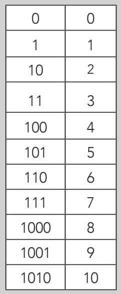
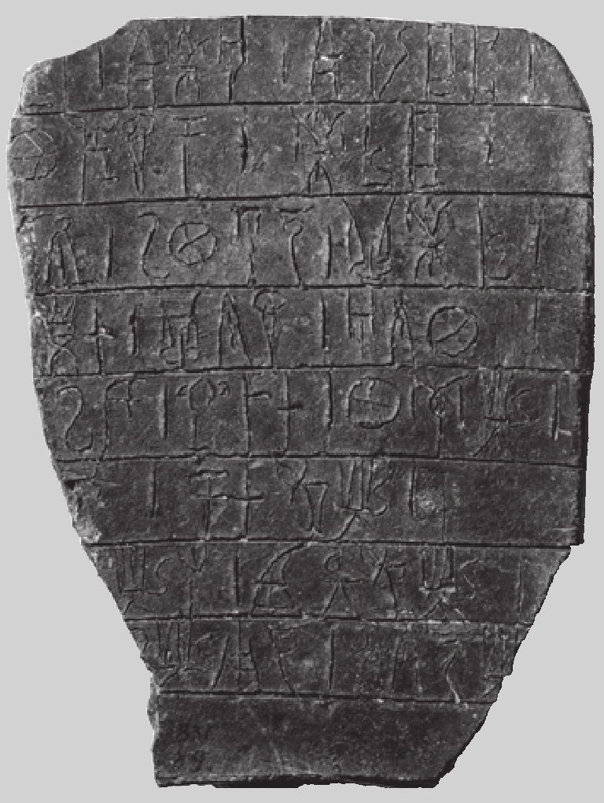
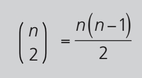
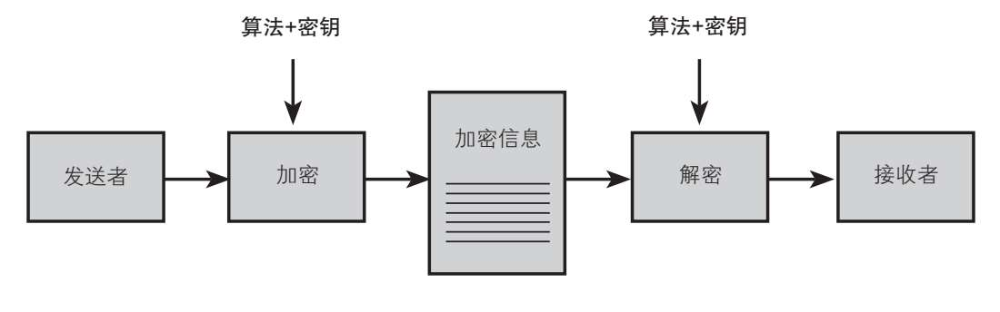

密码学者对术语“编码”的理解与普通人稍有不同。对他们来说，编码是用代码书写的一种方法，例如用一个单词替换另一个单词，或者使用加密术或密码替换字母或其他单个字符。随着时间的流逝，替换字母这种形式越来越普遍，变成了“用代码书写”的同义词。不过，如果从更学术的角度解释，这种方法的正确术语应该是“加密”，反向过程则叫“译解”。
假设我们要发送一条机密信息“ATTACK”（攻击），可以用两种基本方法：替换单词（代码）或替换这个单词的某几个或所有字母（密码）。编码一个单词，最简单的做法是把它翻译成潜在的窃听者听不懂的一种语言。不过那也意味着发出和接收信息的人得掌握一门独特的语言。为了降低收发密码人员素质的要求，大多数机密信息采用的是加密术，比如把单词中的每一个字母用字母表中的其他字母替换。无论是哪种方法，信息接收者都必须知道信息编码或加密的过程，否则这条加密信息就无法被译解。如果已经与接收者商量好使用其中一个方法，比如翻译成另一种语言或把每一个字母都用其他字母替换，我们就需要把目标语言或替换字母在字母表中的对应序号告知对方。例如，“ATTACK”加密后，接收者收到信息“CVVCEM”，只要知道发送者是把原单词每一个字母都按字母表顺序往后推了两个位置，接收者就能通过反向操作，轻松译解这条信息。
二进制代码
计算机在理解和处理信息的过程中，必须要把信息的书面语言翻译成所谓的二进制语言。二进制语言仅包括两个数字：0和1。十进制的0-10对应的二进制表达如右方表格所示。
十进制数9780用二进制代码表达就是10011000110100。

对于译解加密信息的人来说，加密规则（应用的系统）和加密参数（针对每条信息或一组信息的变数指令）都大有用处，潜在的间谍只有同时掌握这两点才能解密信息。掌握加密规则，间谍就知道译解手上的信息需要将词中的每一个字母按字母表顺序往前推x位，找到对应字母，然后将单词中的每一个字母替换掉即可。然而，如果他不知道加密参数，即x是多少，就必须尝试所有可能的数字，再根据每个x译解的结果猜测正确的译解。在这个例子中，密码相对简单，即便把所有可能都试一遍，即大家熟知的“暴力破解”，也不会太费力气。不过，这类密码破解或密码分析手段在面对加密技术足够复杂的信息时肯定会力不从心，暴力破解无论如何也行不通。而且，一般来说，对信息的窃听和译解都有时间限制，间谍必须赶在信息无效或被许多人获知之前，获取并理解它。
翻译或译解？
用一套未知的字符集语言编写文本时，就好像在译解一套密码。翻译可以看作把未知的文本转换成了我们使用的语言，而加密算法就是源语言的语法规则和句法。翻译和译解使用的两种技术有很多相似之处，两者都需要满足相同的条件：收发双方至少必须要有一门共同语言。这就是为什么对失传的语言（如古埃及象形文字或古希腊线形文字B）写就的文本，除非在已知语言中找到对应的表达，否则无法翻译出来。对于上述两种失传的语言，这个对应的已知语言就是古希腊语。下图中的石碑发现于克里特岛，上面的信息就是由希腊线形文字B书写的。

加密规则通常叫作“加密算法”，而用来给信息加密或编码的具体参数叫作“密钥”。前文“ATTACK”例子中，其密钥为2，即每一个原始字母在字母表中往后推两位，用所对应的字母替换掉即可。显而易见，每个加密算法都有许许多多的密钥，所以，仅仅知道加密算法是没用的，还需同时知道所有加密密钥。由于密钥的改变和传播通常比较容易，因此要想保证加密系统的安全，重点保护密钥免遭泄露也就在情理之中了。这个原则由19世纪的荷兰语言学家奥古斯特·柯克霍夫·冯·纽文霍夫（Auguste Kerckhofs von Nieuwenhof）提出，因此也称柯克霍夫原则。
需要多少个密钥？
对于拥有两个用户的系统来说，需要多少个密钥才能确保安全呢？三个？四个？对于秘密交流信息的两个用户来说，一套密码或密钥就够了。如果是三个用户，那么A与B之间的交流需要一个，A与C需要一个，B与C又需要一个，一共三个。同样，四个用户需要六个密钥。以此类推，n个用户时需要计算出有多少个成对的组合，然后确定密钥的数量，公式如下：

因此，在一个相对较小的系统中，如果有10 000个相互联系的用户，就需要49 995 000个密钥。如果是全世界的60亿人口，密钥总数会大到令人眼晕，即17 999 999 997 000 000 000个。
让我们对前面所讲的内容稍做总结，一个加密的通用体系，所需要素如下：

也就是说，过程中包含一个信息发送者和一个信息接收者，一个加密算法和一个确定的密钥，而这个密钥是发送者加密信息和接收者解密信息时使用的。之后我们会发现，在当代，由于密钥的属性和功能发生了改变，这个图表自然也将进行修改，但目前我们还是暂时使用这个图表。
根据柯克霍夫原则，密钥是左右所有密码系统安全的基本元素。近代以前，在所有可行的密码系统中，信息收发双方的密钥都得一致，或者至少要对称，也就是说，密钥既能用来加密，也能用来解密。由于密钥是收发双方共享的秘密，因此密码系统的两端都易受到攻击。这种收发双方共享一个密钥的密码学，人们称为“私人密钥”，简称“私钥”。
统一收发双方的密钥似乎是理所当然的，自有记录以来，人类发明的所有密码系统，不论使用何种算法，有多复杂，都有这样的特点。毕竟，如果一个人用一个密码规则加密信息，另一个人用另一个密码规则解密，怎么可能顺利传达正确的信息呢？几千年来，人们一直把这种想法看作是荒诞不经的。不过，稍后我们会细说此事，因为就在50多年前，这种荒唐想法竟成真了，而且现在已经成了加密学中无处不在的一部分。
当今时代，交流中使用的大部分加密算法至少包括两种密钥：一种是保密的私钥，这是为人熟知的一种；另一种是公开透明的密钥，简称“公钥”。使用私钥的传输机制是这样的：发送者从接收者那里拿到发送信息的公钥，然后用它来加密信息。接收者用自己的私钥解译收到的信息。而且，这种系统具有一个举足轻重的额外优势：收发双方不需要提前聚在一起商量确定密钥问题，这样一来，系统的安全性就比以前高出很多。人们把这种革命性的加密形式称为“公钥”，这种形式构成了当今通信网络安全的基础。
还需要多少个密钥呢？
我们在前面已经介绍过，经典密码学需要大量的密钥。但是，在公共加密系统中，任意两个交换信息的用户仅需要4个密钥，即各自的公钥和私钥。这种情况下，n个用户只需要2n个密钥。
数学就是这种革命性技术的根本，我们稍后会详细解释。实际上，现代密码学建立在两大基础之上。第一个是模运算，第二个是数论，尤其是数论中对质数的研究。